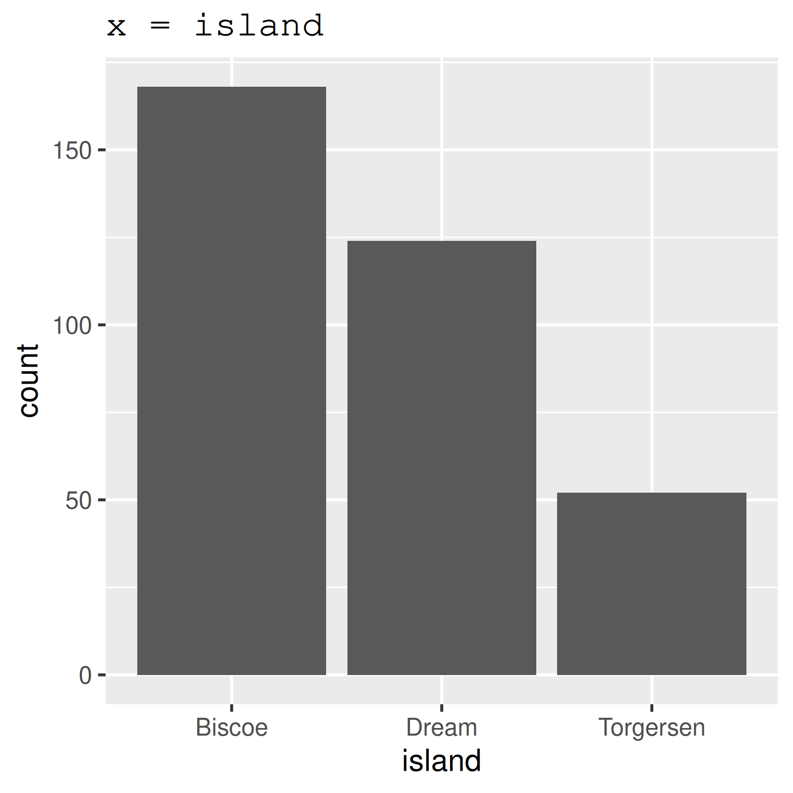
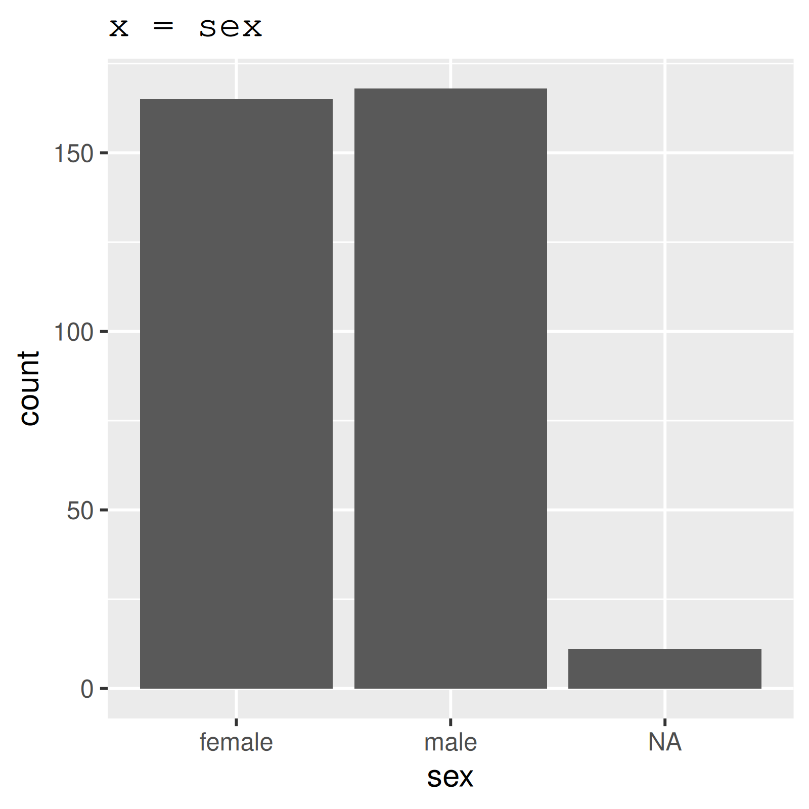
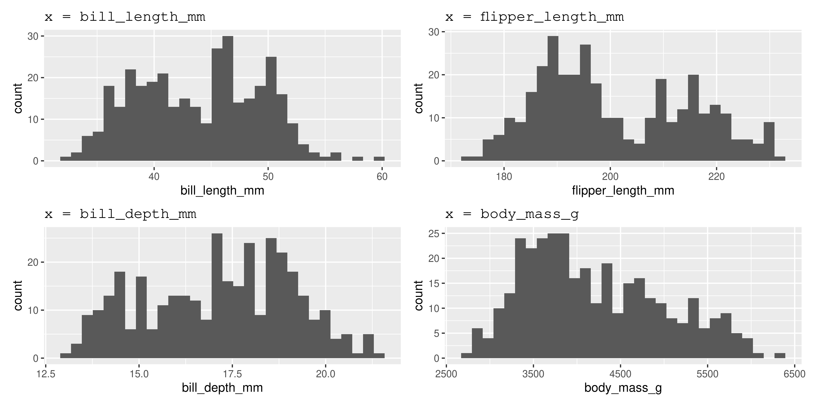
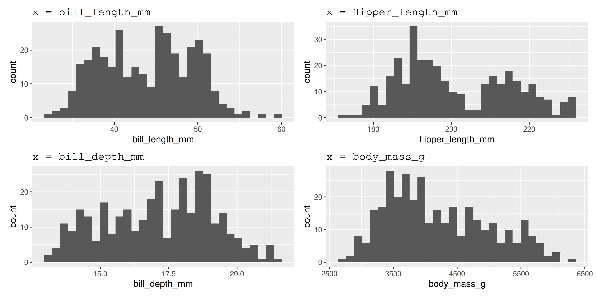

Error: 'weather.csv' does not exist in current working directory ('/home/steffi/Projects/Workshops/workshop-dealing-with-data').Workshop: Dealing with Data in R
Loading & Cleaning Data in R
I know the file exists, why doesn’t R?
steffilazerte
@steffilazerte@fosstodon.org
@steffilazerte
steffilazerte.ca

Compiled: 2026-02-19
R base vs. tidyverse
R base
- Basic R
- Packages are installed and loaded by default
- Base pipe
|>*

*We’ll cover pipes soon 😁
tidyverse
- Collection of ‘new’ packages developed by a team closely affiliated with RStudio
- e.g.,
ggplot2,dplyr,tidyr,readr - Packages designed to work well together
- e.g.,
- Use a slightly different syntax
- tidyverse pipe
%>%or base pipe|>*

Useful to know if functions aretidyverse or R base
Data types: What kind of data do you have?
Specific program files
| Type | Extension | R Package | R function |
|---|---|---|---|
| Excel | .xls, .xlsx | readxl* |
read_excel() |
| Open Document | .ods | readODS |
read_ods() |
| SPSS | .sav, .zsav, .por | haven |
read_spss() |
| SAS | .sas7bdat | haven |
read_sas() |
| Stata | .dta | haven |
read_dta() |
| Database Files | .dbf | foreign |
read.dbf() |
Convenient but…
- Can be unreliable
- Can take longer
For files that don’t change, better to save as a *.csv
(Comma-separated-variables file)
 * part of the
* part of the tidyverse
Data types: What kind of data do you have?
General text files
| Type | R base | readr package * |
|---|---|---|
| Comma separated | read.csv() |
read_csv(), read_csv2() |
| Tab separated | read.delim() |
read_tsv() |
| Space separated | read.table() |
read_table() |
| Fixed-width | read.fwf() |
read_fwf() |
 * part of the
* part of the tidyverse
readrpackage especially useful for big data sets (fast!)- Error/warnings from
readrare a bit more helpful
We’ll focus on
readxlpackageread_excel()
readrpackageread_csv(),read_tsv()
skim() the data
skim() is from skimr
- Are the formats correct?
- numbers (
numeric), - text (
character) - date (
date,POSIXct,datetime) - categories (
factor)
- numbers (
- Are values appropriate?
- Should there be
NAs?
- Should there be
- Are there any typos?
- Number of rows expected?
── Data Summary ────────────────────────
Values
Name penguins
Number of rows 344
Number of columns 8
_______________________
Column type frequency:
factor 3
numeric 5
________________________
Group variables None
── Variable type: factor ───────────────────────────────────────────────────────────────────────────────────────────────────────────────────────────────────────────────────────────────────────────────
skim_variable n_missing complete_rate ordered n_unique top_counts
1 species 0 1 FALSE 3 Ade: 152, Gen: 124, Chi: 68
2 island 0 1 FALSE 3 Bis: 168, Dre: 124, Tor: 52
3 sex 11 0.968 FALSE 2 mal: 168, fem: 165
── Variable type: numeric ──────────────────────────────────────────────────────────────────────────────────────────────────────────────────────────────────────────────────────────────────────────────
skim_variable n_missing complete_rate mean sd p0 p25 p50 p75 p100 hist
1 bill_length_mm 2 0.994 43.9 5.46 32.1 39.2 44.4 48.5 59.6 ▃▇▇▆▁
2 bill_depth_mm 2 0.994 17.2 1.97 13.1 15.6 17.3 18.7 21.5 ▅▅▇▇▂
3 flipper_length_mm 2 0.994 201. 14.1 172 190 197 213 231 ▂▇▃▅▂
4 body_mass_g 2 0.994 4202. 802. 2700 3550 4050 4750 6300 ▃▇▆▃▂
5 year 0 1 2008. 0.818 2007 2007 2008 2009 2009 ▇▁▇▁▇
count() categories
count() is from dplyr*
- Check for sample sizes and potential typos in categorical columns
- Assess missing values
 * part of the
* part of the tidyverse
Plot categories



 * part of the
* part of the tidyverse
Plot numbers

* part of the tidyverse
Cleaning column names
clean_names() is from janitor*
* not part of the tidyverse but tidyverse-orientated
# A tibble: 300 × 7
river_name site ele amo temperature_c year wea
<chr> <chr> <chr> <dbl> <dbl> <dbl> <chr>
1 Grasse Up stream Al 0.606 10.9 2019 snowy
2 Grasse Mid stream Al 0.425 8.68 2020 cloudy
3 Grase Down stream Al 0.194 8.75 2021 cloudy
4 Oswegatchie Up stream Al 1 0.791 2022 sunny
5 Oswegatchie Mid stream Al 0.161 9.32 2023 snowy
6 Oswegatchie Down stream Al 0.0333 10.6 2019 wet
7 Raquette Up stream Al 0.292 4.01 2020 snowy
8 Raquette Mid stream Al 0.0389 5.96 2021 sunny
9 Raquette Down stream Al NA 6.21 2022 cloudy
10 St. Regis Up stream Al 0.681 8.02 2023 wet
# ℹ 290 more rows
Side Note: Naming conventions

Cleaning column names
rename() is from dplyr*
rename() columns
# A tibble: 300 × 7
river_name site element amount temperature year wea
<chr> <chr> <chr> <dbl> <dbl> <dbl> <chr>
1 Grasse Up stream Al 0.606 10.9 2019 snowy
2 Grasse Mid stream Al 0.425 8.68 2020 cloudy
3 Grase Down stream Al 0.194 8.75 2021 cloudy
4 Oswegatchie Up stream Al 1 0.791 2022 sunny
5 Oswegatchie Mid stream Al 0.161 9.32 2023 snowy
6 Oswegatchie Down stream Al 0.0333 10.6 2019 wet
7 Raquette Up stream Al 0.292 4.01 2020 snowy
8 Raquette Mid stream Al 0.0389 5.96 2021 sunny
9 Raquette Down stream Al NA 6.21 2022 cloudy
10 St. Regis Up stream Al 0.681 8.02 2023 wet
# ℹ 290 more rows * part of the tidyverse
Subsetting columns
select() is from dplyr*
select() columns you want
* part of the tidyverse
OR, unselect() columns you don’t want
# A tibble: 300 × 6
river_name site element amount temperature year
<chr> <chr> <chr> <dbl> <dbl> <dbl>
1 Grasse Up stream Al 0.606 10.9 2019
2 Grasse Mid stream Al 0.425 8.68 2020
3 Grase Down stream Al 0.194 8.75 2021
4 Oswegatchie Up stream Al 1 0.791 2022
5 Oswegatchie Mid stream Al 0.161 9.32 2023
6 Oswegatchie Down stream Al 0.0333 10.6 2019
7 Raquette Up stream Al 0.292 4.01 2020
8 Raquette Mid stream Al 0.0389 5.96 2021
9 Raquette Down stream Al NA 6.21 2022
10 St. Regis Up stream Al 0.681 8.02 2023
# ℹ 290 more rowsFixing typos
if_else() and mutate() from dplyr package*
if_else() tests for a condition, and returns one value if FALSE and another if TRUE
* part of the tidyverse
Iterative process
- Make some corrections
- Check the data
- Make some more corrections (either add to or modify existing code)
tidyverse functions
rename(), select(), mutate()
tidyversefunctions always start with the data, followed by other arguments- you can reference any column from ‘data’
rename()changes column namesselect()chooses columns to keep or to remove (with-)mutate()changes column contents
Why use tidyverse functions?
Pipes! |>* Allow you to string commands together
Instead of:
water <- read_csv("data/water_raw.csv")
water <- clean_names(water)
water <- rename(water, element = ele, amount = amo, temperature = temperature_c)
water <- select(water, -wea)
water <- mutate(water,
river_name = case_when(river_name %in% c("Grase", "grasse") ~ "Grasse",
river_name == "raquette" ~ "Raquette",
TRUE ~ river_name))* |> is the base pipe, %>% is the tidyverse pipe, you can use either
Play around
Take a moment to play with this code in your console
Convert this:
water <- read_csv("data/water_raw.csv")
water <- clean_names(water)
water <- rename(water, element = ele, amount = amo, temperature = temperature_c)
water <- select(water, -wea)
water <- mutate(water,
river_name = case_when(river_name %in% c("Grase", "grasse") ~ "Grasse",
river_name == "raquette" ~ "Raquette",
TRUE ~ river_name))To this:
Omitting NAs
drop_na() is from tidyr*
Omit NAs from the amount column only (drop those rows)
Omit all NAs from all columns (drop those rows)
Check…
# A tibble: 0 × 6
# ℹ 6 variables: river_name <chr>, site <chr>, element <chr>, amount <dbl>, temperature <dbl>, year <dbl>[1] 261No more NAs!
Fewer rows
* part of the tidyverse 
Replacing NAs
replace_na() is from tidyr*
Check…
# A tibble: 0 × 6
# ℹ 6 variables: river_name <chr>, site <chr>, element <chr>, amount <dbl>, temperature <dbl>, year <dbl>[1] 300No more NAs!
Same number of rows
(If you want to do a more complex replacement, you’ll have to use if_else() or case_when() like we did for typos.)
* part of the tidyverse
Converting to NA
Remember the problem with temperature?
# A tibble: 3 × 6
river_name site element amount temperature year
<chr> <chr> <chr> <dbl> <dbl> <dbl>
1 Raquette Up stream Br NA -99 2019
2 Oswegatchie Mid stream K 0.426 -99 2020
3 St. Regis Mid stream La 0.367 -99 2023na_if() is from dplyr*
* part of the tidyverse
Saving data
Keep yourself organized
- Keep your R-created data in a different folder from your ‘raw’ data*
- If you have a lot going on, split your work into several scripts, and number the both the scripts AND the data sets produced:
1_cleaned.csv2_summarized.csv3_graphing.csv
Save your data to file:
- First create the datasets folder
* I usually have a data folder and then both raw and datasets folders inside of that